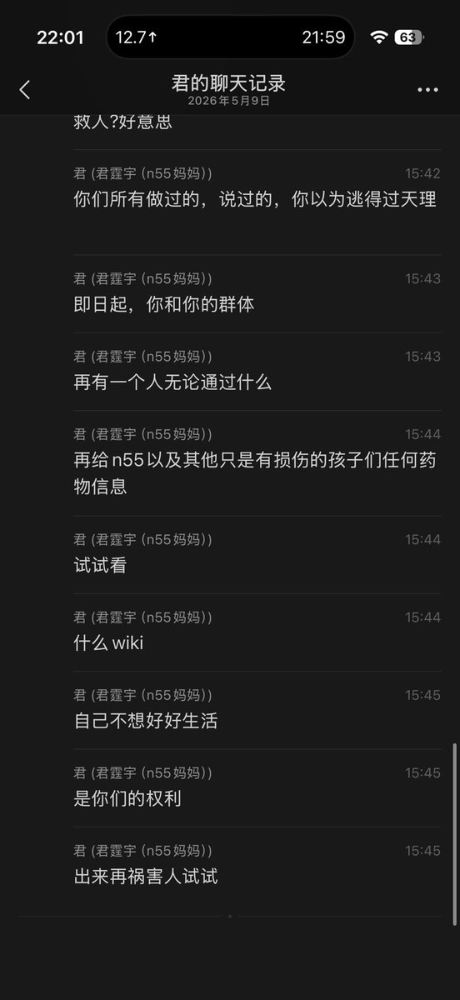

死妈高手蘑菇盆栽🍄
@loveforeversfy
@Rinko_zero8964 抱抱……

Rinko
@Rinko_zero8964
我干嘛了到底我干嘛了到底
我都退圈了我什么都不干了把责任全部推到我头上我到底干嘛了。
我是个很坏很坏至于连退圈了都要被说以前是畜生的人吗。我带坏谁了？
干什么
我什么都没有干。我早就不吃药不od了我连正常的药物都不吃了。更别提给人
这也追到我头上？
。。。
都去死好了都去死都给我死我去死 https://t.co/PTk3I2ht1K